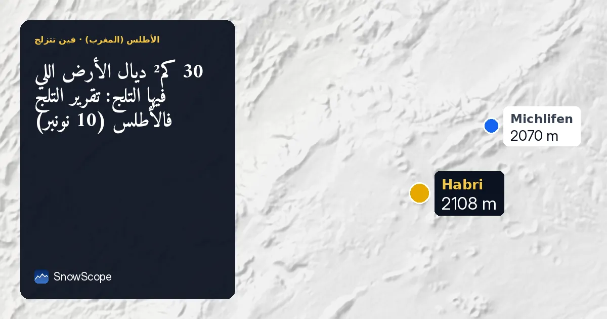

30 كم² ديال الأرض اللي فيها التلج: تقرير التلج فالأطلس (10 نونبر)
الغطا ديال التلج ديال الأطلس تقسم لنص فجوج نهار. على حساب 10 نونبر، SnowScope كايقول يلا غاو بغاو 30 كم² من الأرض البيضا في كل الأطلس، والأعلى طبقة ديال التلج توصل بغاو 8 سم على أعلى القمم. ثلاثة محطات ديال التزحلق—Habri و Michlifen و Oukaïmeden—كاينة البيست ديالهم فاضية كاملها.
شوف توقعات التلج مباشرة ديال Habri فالتطبيق ديال SnowScopeالعلو ديال التلج، التنبيهات والخريطة 3D، فابور.
اش كايقول خريطة التلج اليوم
التلج كايكون بغاو فوق 3,800 م، حيث الهوا بارد بزاف باش ما تكون الذوبان. تحت هاد الارتفاع، الأطلس لون بني وفاضي. البيست ديال Oukaïmeden على 3,258 م كايكون فشوية فمنطقة التلج على أعلى ريج ديالو، بس البيست ديالو ما فيهاش عمق ديال التزحلق. Habri (2,108 م) و Michlifen (2,070 م) منخفضين بزاف باش يحطو التلج في هاد النموذج السخان.
القصة ديال 48 ساعة اللي فاتو هي الفقد السريع. على 8 نونبر الجهة كانت عندها 70 كم² من الأرض مغطات بالتلج. شدات لـ 40 كم² على 9 نونبر، وحطات لـ 30 كم² اليوم. مستوى التجميد في Oukaïmeden كايتاروح بين 3,800 م و 4,260 م، معناها حتا على القمة، درجات حرارة الهوا كايكون قريبة من الصفر أو أعلى. التلج في أول الموسم في الأطلس ضعيف، والسخونة ديال الخريف كاتمسحو بسرعة.
| المحطة | العلو ديال التلج | تلج جديد، 72 س | جاي، الأيام الجاية | الفوق |
|---|---|---|---|---|
| Habri | 0 سم | 0 سم | 0 سم | 2108 م |
| Michlifen | 0 سم | 0 سم | 0 سم | 2070 م |
| Oukaïmeden | 0 سم | 0 سم | 0 سم | 3258 م |

واش البيست فاضية دالحين
نونبر موسم غالط باش يكون فيه تلج على هاد الارتفاعات. المحطات ديال التزحلق في الأطلس كايحتاجو حاجتين: ارتفاع باش يبقا بارد، وعاصفة باردة بزاف باش تجيب التلج بدل المطر. حتا حد من الشروط ما كايكون دالحين. Habri و Michlifen، تحت 2,110 م، كايحتاجو نظام قوي باش يعطيو تلج غاع. Oukaïmeden، على 3,258 م، عندو ميزة الارتفاع، بس التوقعات ديال دالحين ما فيهاش شي تساقط في جوج نهار اللي جايين.
الوقت مهم بزاف. أول نونبر كايقول الفاصل بين الخريف والشتا. القمم الفوقانية كاتاخد شوية نبضات بارحة من التلج—بحال ما وقع هنا على 8 نونبر—بس هاد الوصولات رقيقة وسهل تذوب. الأرض بازالت سخونة من الصيف، والجماعات الهواية كاتجي من فوق شمال إفريقيا ما كاينة مستقرة بزاف باش تحط برودة عميقة. هاد هي الحوال ديال التلج في أول موسم في الأطلس، زيارة قصيرة وليس أساس ديال موسم التزحلق.
اش يقع جاي
التوقعات من 11 لـ 13 نونبر كايقولو التقليص كاينو. SnowScope كايتوقع 20 كم² من الأرض مغطات بالتلج على 11 و 12 نونبر، بعدين طيحة لـ 10 كم² على 13 نونبر. ما فاين تلج جديد متوقع في حتا محطة في هاد الفترة. التلج اللي بقا كايبقا رقيق كايف يرتفع مستوى التجميد في النهار والذوبان كايتسرع على الجهة ديال الجنوب.
Oukaïmeden هو المكان اللي خاصك تتفرج عليه كايف تجي العاصفة الشتوية اللي جايا. التلفريك ديالو كايوصل عالي بزاف باش الأنظمة البارودة تعطي التلج بدل المطر. Habri و Michlifen كايحتاجو برودة ديال سنة كاملة—البنوع اللي ما تكون كتير قبل آخر نونبر أو دجنبر—قبل ما يبنيو قاعدة. لحد كاين، هوما جافين.
هاد الموسم قياس الشتوات اللي فاتو
أطلس فاضي على 10 نونبر ما هو حاجة غريبة. على 1,970 م قرب Michlifen، معدل العلو ديال التلج على هاد التاريخ في 46 شتا اللي فاتو كان 0 سم. في Oukaïmeden، مقاسة على 2,929 م، العمق ديال التقليد كان هو كيفاش 0 سم. في 33 من 46 شتا اللي فاتو، ما كان فاين شي تلج معاد قياسو في المحطة على هاد التاريخ.
اللي فرقان دالحين هو سرعة التبديل. النقطة اللي فيها اللي تاخد البنيان تقول التلج جا بسرعة جوج نهار غاع، بعدين ذاب شبه البسرعة. هاد النموذج—نبضة أولى بارحة متبوعة بفقد سريع—هو البنوع ديال نونبر في الأطلس، كايف الأنظمة ديال الهواية كاتجيب الرطوبة بس ما عندهاش البرودة المستقرة باش تبني رصيف تلج مستقر. التلج ديال الشتا في الأطلس كايجي أكتر، عادة من دجنبر لفوق.
اش خاصك تتوقع كايف تخطط ليفزيتة
إذا كنت فكاري تقرا عند حتا محطة في الأطلس في جوج نهار اللي جايين، ما تتوقع تتزحلق. ما فاين تلج متوقع في حتا ارتفاع قبل 13 نونبر. حتا إذا ظهر التلج في الخريطة ديال SnowScope على القمم الفوقانية، معناها الصخور والعشبة بغاو مخبيين تحت طبقة رقيقة. التضاريس ما هي آمنة والغطا ما هو صالح للتزحلق.
تفرج على الخريطة بزاف بعد 13 نونبر. كايف جات عاصفة باردة—وكاتجي، كايف نموذج الشتا يتأسس—Oukaïmeden كاتكون الأولى تبيض على البيست ديالها الفوقانية. Habri و Michlifen كايحتاجو نظام قوي بزاف باش يجيب هوا متجمد لـ 2,000 م. هاد ما كايقع كتير قبل ما تخلص الخريف البنوع كاملها. استعمل التطبيق ديال SnowScope باش تحط نبهة ديال التلج الطري في Oukaïmeden كايف الحوال تحسن.
نصايح للي كيتزلجو
- ما تروح للأطلس باش تتزحلق في جوج نهار اللي جايين. الثلاثة محطات فاضية، وما فاين تلج جديد متوقع.
- حتا إذا ظهر التلج على الخريطة على ارتفاع فوقاني، تذكر أنو رقيق وضعيف في نونبر. الصخور تخبيا تحت السطح على التضاريس المكشوفة.
- Oukaïmeden هو المحطة اللي فيها الموقع الأحسن باش يكون فيه تلج في أول الموسم لأن عندها قمة 3,258 م، بس بازالت تحتاج عاصفة باردة بزاف باش تجيب التلج بدل المطر.
- شد على موقع المحطة الرسمي باش تشوف تاريخات فتح التلفريك والحالة ديال التشغيل. التلج على الخريطة ما معناتش المحطة كاتشتغل.
- حط نبهة ديال التلج الطري في SnowScope لليوم اللي قبل ما تخطط تروح، باش تشوف آخر توقعات وما تروح للبيست اللي مغلقة.
على هاد الأرقام
العلو ديال التلج فالمحطات هو أكثر تلج فالجهة الفوقانية فالتاريخ المكتوب؛ هادو تقديرات لمنطقة، ماشي قياس فنقطة وحدة. التوقعات يمكن تتبدل. ديما شوف النشرة الرسمية ديال الانهيارات قبل ما تخرج من البيست.
كيفاش تستاشهد بهاد المقال
للبحث، التعليم ولا الصحافة: الأرقام والرسومات تقدر تعاود تخدم بيهم بحرية تحت CC BY 4.0 مع هاد الاستشهاد.
SnowScope (2026), 30 كم² ديال الأرض اللي فيها التلج: تقرير التلج فالأطلس (10 نونبر), https://snowscope.app/blog/ar/2026/11/atlas-morocco-atlas-snow-check-10-november-2026.html, تشاف ف 2026-11-10
SnowScope (Atlas Labs). (2026, November 10). 30 كم² ديال الأرض اللي فيها التلج: تقرير التلج فالأطلس (10 نونبر). SnowScope snow reports. https://snowscope.app/blog/ar/2026/11/atlas-morocco-atlas-snow-check-10-november-2026.html
BibTeX
@misc{snowscope2026atlasmoroccoatlassnowche,
author = {{SnowScope (Atlas Labs)}},
title = {30 كم² ديال الأرض اللي فيها التلج: تقرير التلج فالأطلس (10 نونبر)},
year = {2026},
month = nov,
howpublished = {\url{https://snowscope.app/blog/ar/2026/11/atlas-morocco-atlas-snow-check-10-november-2026.html}},
note = {Published 2026-11-10 12:24 UTC; accessed 2026-11-10}
}· CC BY 4.0 · الطريقة، الداتا والأدوات →
Habri: التلج والحرارة حسب العلو، هاد الشتا مقارنة مع اللي فاتت (الأدوات) →
تابع Habri
فابور: ميساج ملي يجي التلج، والتوقعات كل صباح.
تقارير أخرى ديال التلج

فالعلو ديال Oukaïmeden، السلسلة ديالنا ديال 46 شتوة كتبين 12 % أيام ديال التلج أقل؛ تحت، الإشارة كتضيع فالفرق الكبير بين الشتوات.

فـ 15 دجنبر فـ Michlifen، 89% ديال الشتوات اللي فاتو غالبا مافيهاش تلج. الفرصة الأحسن كتجي بعد الزوبعة، مافيش حساب للتاريخ. المعطيات من 13 نونبر 2026.

يوم 15 ديسمبر، Oukaïmeden ديال الوسط فيها 16 سم ضد Val Thorens 89 سم. تفقدنا الديار ديال المصاعد. المعطيات من 13 نونبر 2026.